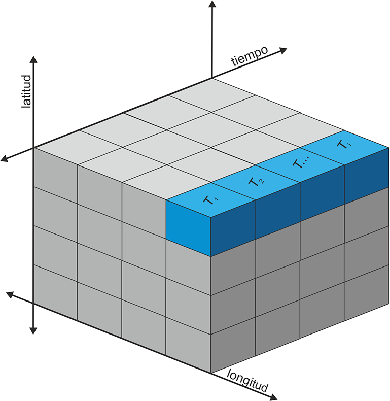

Uso de datos multidimensionales espaciales

Consideraciones iniciales
La información espacio-temporal es clave en muchas disciplinas, especialmente en la climatología o la meteorología, y ello hace necesario disponer de un formato que permita una estructura multidimensional. Además es importante que ese formato tenga un alto grado de compatibilidad de intercambio y pueda almacenar un elevado número de datos. Estas características llevaron al desarrollo del estándar abierto netCDF (NetworkCommon Data Form). El formato netCDF es un estándar abierto de intercambio de datos científicos multidimensionales que se utiliza con datos de observaciones o modelos, principalmente en disciplinas como la climatología, la meteorología y la oceanografía. La convención netCDF es gestionada por Unidata (unidata.ucar.edu/software/netcdf). Se trata de un formato espacio-temporal con una cuadrícula regular o irregular. La estructura multidimensional en forma de matriz (array) permite usar no sólo datos espacio-temporales, sino también multivariables. Las características generales del netCDF se refieren al uso de un sistema de coordenadas n-dimensional, de múltiples variables y de una rejilla regular o irregular. Además se incluyen metadatos que describen los contenidos. La extensión del formato netCDF es “nc”.

Recientemente hice uso de datos de sequía de España en formato netCDF con una resolución de 1 km para representar el estado de sequía de cada año desde 1960 (https://monitordesequia.csic.es/historico/). El índice SPEI (Standardized Precipitation-Evapotranspiration Index) es ampliamente usado para describir la situación de sequía con referencia a diferentes intervalos temporales (3, 6, 12 meses etc).
{{< tweet 1490260694851362821 >}}
He sido preguntado en varias ocaciones sobre el manejo del formato netCDF, por esta razón, en este post hacemos uso de un subconjunto, el año 2017 del SPEI 12 meses, de estos mismos datos.
Paquetes
El manejo de datos en formato netCDF es posible a través de varios paquetes de forma directa o indirecta. Destaca el paquete {ncdf4} específicamente diseñado, del que hacen uso también otros paquetes aunque no lo veamos. El manejo con {ncdf4} es algo complejo, particularmente por la necesidad de gestionar la memoria RAM cuando tratamos grandes conjuntos de datos o también por la forma de manejar la clase array. Otro paquete muy potente es {terra}, que conocemos cuando trabajamos con datos raster y permite usar sus funciones también para el manejo del formato netCDF.
| Paquete | Descripción |
|---|---|
| tidyverse | Conjunto de paquetes (visualización y manipulación de datos): ggplot2, dplyr, purrr,etc. |
| sf | Simple Feature: importar, exportar y manipular datos vectoriales |
| lubridate | Fácil manipulación de fechas y tiempos |
| terra | Importar, exportar y manipular raster (paquete sucesor de raster) |
| mapSpain | Límites administrativos de España |
# instalamos los paquetes si hace falta
if(!require("tidyverse")) install.packages("tidyverse")
if(!require("sf")) install.packages("sf")
if(!require("lubridate")) install.packages("lubridate")
if(!require("terra")) install.packages("terra")
if(!require("mapSpain")) install.packages("mapSpain")
# paquetes
library(tidyverse)
library(sf)
library(terra)
library(lubridate)
library(mapSpain)Para aquellos con menos experiencia con tidyverse, recomiendo una breve introducción en este blog post.
Datos
Primero descargamos los datos aquí. Importamos los datos del índice SPEI-12 del año 2017 usando la función rast(). En realidad en este paso sólo hemos creado una referencia al archivo sin importar todos los datos a la memoria. Vemos en los metadatos el número de capas (layers) disponibles. El índice SPEI-12 está calculado semanalmente con 4 semanas por mes. Si nos fijamos en los metadatos, falta la definicón del sistema de coordenadas, por ello la definimos asignando el código EPSG:25830 (ETRS89/UTM 30N).
# importamos
spei <- rast("spei12_2017.nc")
# metadatos
spei## class : SpatRaster
## dimensions : 834, 1115, 48 (nrow, ncol, nlyr)
## resolution : 1100, 1100 (x, y)
## extent : -80950, 1145550, 3979450, 4896850 (xmin, xmax, ymin, ymax)
## coord. ref. :
## source : spei12_2017.nc
## names : spei1~017_1, spei1~017_2, spei1~017_3, spei1~017_4, spei1~017_5, spei1~017_6, ...
## time : 2017-01-01 to 2017-12-23# definimos el sistema de coordenadas
crs(spei) <- "EPSG:25830"
# mapeamos las primeras semanas
plot(spei)
Extraer metadatos
Existen diferentes funciones para acceder a metadatos como las fechas, los nombres de las capas o de las variables. Recordemos que los archivos netCDF también pueden contener varias variables.
# fechas
t <- time(spei)
head(t)## [1] "2017-01-01 UTC" "2017-01-09 UTC" "2017-01-16 UTC" "2017-01-23 UTC"
## [5] "2017-02-01 UTC" "2017-02-09 UTC"# nombres de capas
names(spei) %>% head()## [1] "spei12_2017_1" "spei12_2017_2" "spei12_2017_3" "spei12_2017_4"
## [5] "spei12_2017_5" "spei12_2017_6"# nombres de variables
varnames(spei)## [1] "spei12_2017"Extracción de series temporales
Una posibiliad que permiten los datos netCDF es la extracción de series temporales, bien a partir de puntos o áreas. Creamos la series temporales del SPEI-12 para la ciudad de Zaragoza y el promedio de toda la comunidad autónoma de Aragón.
# coordenadas de Zaragoza
zar <- st_point(c(-0.883333, 41.65)) %>%
st_sfc(crs = 4326) %>%
st_as_sf() %>%
st_transform(25830)El paquete {terra} sólo acepta su propia clase vectorial SpatVector, por eso es necesario convertir el punto de clase sf con la función vect(). Para extraer la serie temporal empleamos la función extract(). Los datos extraídos los encontramos en forma de una tabla, cada fila es un elemento de los datos vectoriales y cada columna una capa. En nuestro caso sólo es una fila correspondiente a la ciudad de Zaragoza.
package_name::function_name).
# extraer la serie temporal
spei_zar <- terra::extract(spei, vect(zar))
# dimensiones
dim(spei_zar)## [1] 1 49# creamos un data.frame
spei_zar <- tibble(date = t, zar = unlist(spei_zar)[-1])
head(spei_zar)## # A tibble: 6 x 2
## date zar
## <dttm> <dbl>
## 1 2017-01-01 00:00:00 0.280
## 2 2017-01-09 00:00:00 0.25
## 3 2017-01-16 00:00:00 0.220
## 4 2017-01-23 00:00:00 0.210
## 5 2017-02-01 00:00:00 0.350
## 6 2017-02-09 00:00:00 0.220El promedio de la comunidad autónoma de Aragón lo obtenemos usando la geometría de polígono e indicando el tipo de función con la que queremos resumir el área. La función esp_get_ccaa() del paquete mapSpain() es muy útil a la hora de importar límites administrativos españoles de diferentes niveles. En la extracción es importante que pasemos el argumento na.rm = TRUE de la función mean() para excluir píxeles sin valor.
# límites de Aragón
aragon <- esp_get_ccaa("Aragón") %>%
st_transform(25830)
# extraemos los valores medios del SPEI-12
spei_arag <- terra::extract(spei, vect(aragon), fun = "mean", na.rm = TRUE)
# añadimos los nuevos valores a nuestro data.frame
spei_zar <- mutate(spei_zar, arag = unlist(spei_arag)[-1])En el seguiente paso transformamos la tabla al formato largo con pivot_longer(), fusionando el valor del índice SPEI de Zaragoza y Aragón. Además añadiremos una columna con la interpretación del índice y cambiaremos las etiquetas.
spei_zar <- pivot_longer(spei_zar, 2:3, names_to = "reg", values_to = "spei") %>%
mutate(sign = case_when(spei < -0.5 ~ "sequía",
spei > 0.5 ~ "húmedo",
TRUE ~ "normal"),
date = as_date(date),
reg = factor(reg, c("zar", "arag"), c("Zaragoza", "Aragón")))Ahora falta por construir el gráfico en el que comparamos el SPEI-12 de Zaragoza con el promedio de Aragón. La función geom_rect() nos ayuda a dibujar diferentes rectángulos de fondo para marcar la sequía, episodio normal o húmedo.
# gráfico de serie temporal
ggplot(spei_zar) +
geom_rect(aes(xmin = min(date), xmax = max(date),
ymin = -0.5, ymax = 0.5),
fill = "#41ab5d") +
geom_rect(aes(xmin = min(date), xmax = max(date),
ymin = -1, ymax = -0.5),
fill = "#ffffcc") +
geom_rect(aes(xmin = min(date), xmax = max(date),
ymin = -1.5, ymax = -1),
fill = "#F3641D") +
geom_hline(yintercept = 0, size = 1, colour = "white") +
geom_line(aes(date, spei, linetype = reg), size = 1, alpha = .7) +
scale_x_date(date_breaks = "month", date_labels = "%b") +
labs(linetype = "", y = "SPEI-12", x = "") +
coord_cartesian(expand = FALSE) +
theme_minimal() +
theme(legend.position = c(.25, .9),
panel.grid.minor = element_blank(),
panel.ontop = TRUE)
Mapa de sequía
España
Con el objetivo de crear un mapa de la severidad de sequía en 2017, primero debemos hacer algunas modificaciones. Con la función subset() obtenemos una capa o varias como subconjunto, aquí seleccionamos la última para poder ver el estado de sequía de todo el año.
En el siguiente paso reemplazamos todos los valores mayores de -0,5 con NA. Se considera sequía cuando el índice SPEI está debajo de -0,5 y, en cambio, si está encima de 0,5 hablaríamos de un período húmedo.
La clase del raster no es directamente compatible con ggplot, por eso, lo convertimos en una tabla xyz con longitud, latitud y la variable. Cuando hacemos la misma conversión de varias capas cada columna representaría una capa. Finalmente renombramos nuestra columna del índice y añadimos una nueva columna con distintos grados de severidad de sequía.
# extraemos capa(s) con su índice
spei_anual <- subset(spei, 48)
# sustituimos valores de no-sequía con NA
spei_anual[spei_anual > -0.5] <- NA
# convertimos nuestro raster en una tabla de xyz
spei_df <- as.data.frame(spei_anual, xy = TRUE)
head(spei_df)## x y spei12_2017_48
## 38096 123100 4858900 -1.48
## 39195 105500 4857800 -1.59
## 39197 107700 4857800 -1.40
## 39211 123100 4857800 -1.47
## 39212 124200 4857800 -1.50
## 40310 105500 4856700 -1.63# cambiamos el nombre de la variable
names(spei_df)[3] <- "spei"
# categorizamos el índice y fijamos el orden del factor
spei_df <- mutate(spei_df, spei_cat = case_when(spei > -0.9 ~ "leve",
spei > -1.5 & spei < -0.9 ~ "moderada",
spei > -2 & spei <= -1.5 ~ "severa",
TRUE ~ "extrema") %>%
fct_relevel(c("leve", "moderada", "severa", "extrema")))Un mapa de raster lo creamos con la geometría geom_tile() indicando longitud, latitud y el color de los píxeles con nuestra variable categorizada.
ccaa <- esp_get_ccaa() %>%
filter(!ine.ccaa.name %in% c("Canarias", "Ceuta", "Melilla")) %>%
st_transform(25830)
# mapa
ggplot(spei_df) +
geom_tile(aes(x , y, fill = spei_cat)) +
geom_sf(data = ccaa, fill = NA, size = .1, colour = "white", alpha = .4) +
scale_fill_manual(values = c("#ffffcc", "#F3641D", "#DE2929", "#8B1A1A"),
na.value = NA) +
guides(fill = guide_legend(keywidth = 2, keyheight = .3, label.position = "bottom",
title.position = "top")) +
coord_sf() +
labs(fill = "SEQUIA") +
theme_void() +
theme(legend.position = "top",
legend.justification = 0.2,
plot.background = element_rect(fill = "black", colour = NA),
legend.title = element_text(colour = "white", size = 20, hjust = .5),
legend.text = element_text(colour = "white"),
plot.margin = margin(t = 10))
Aragón
En este último ejemplo, seleccionamos la situación de sequía a 12 meses vista, a principios y final de año. La función principal es crop() que recorta a la extensión de un objeto espacial, en nuestro caso es Aragón, después aplicamos la función mask() que enmascara todos aquellos píxeles dentro de los límites dejando en NA los demás.
# subconjunto primera y ultima semana 2017
spei_sub <- subset(spei, c(1, 48))
# recortamos y enmascaramos Aragón
spei_arag <- crop(spei_sub, aragon) %>%
mask(vect(aragon))
# convertimos los datos a xyz
spei_df_arag <- as.data.frame(spei_arag, xy = TRUE)
# renombramos las dos capas
names(spei_df_arag)[3:4] <- c("Enero", "Diciembre")
# pasamos al formato de tabla larga fusionando ambos meses
spei_df_arag <- pivot_longer(spei_df_arag, 3:4,
names_to = "mes",
values_to = "spei") %>%
mutate(mes = fct_relevel(mes, c("Enero", "Diciembre")))Los dos mapas los hacemos de la misma forma como el de España. La diferencia principal es que usamos el índice SPEI directamente como variable continua. Además, para crear dos mapas con una fila añadimos la función facet_grid(). Por último, el índice muestra valores negativos y positivos, por tanto, es necesario una gama divergente de colores. Con el objetivo de centrar el punto medio en 0 debemos reescalar con ayuda de la función rescale() del paquete scales.
# mapa de Aragón
ggplot(spei_df_arag) +
geom_tile(aes(x , y, fill = spei)) +
geom_sf(data = aragon, fill = NA, size = .1, colour = "white", alpha = .4) +
scale_fill_distiller(palette = "RdYlGn", direction = 1,
values = scales::rescale(c(-2.1, 0, 0.9)),
breaks = seq(-2, 1, .5)) +
guides(fill = guide_colorbar(barwidth = 8, barheight = .3, label.position = "bottom")) +
facet_grid(. ~ mes) +
coord_sf() +
labs(fill = "SPEI-12", title = "Aragón") +
theme_void() +
theme(legend.position = "top",
legend.justification = 0.5,
legend.title = element_text(colour = "white", vjust = 1.1),
strip.text = element_text(colour = "white"),
plot.background = element_rect(fill = "black", colour = NA),
plot.title = element_text(colour = "white", size = 20, hjust = .5, vjust = 2.5,
margin = margin(b = 10, t = 10)),
legend.text = element_text(colour = "white"),
plot.margin = margin(10, 10, 10, 10))
Más posibilidades
Es posible agrupar las diferentes capas aplicando una función. Usando los meses de cada semana del SPEI-12 podemos calcular el promedio mensual en 2017. Para ello hacemos uso de la función tapp() que a su vez aplica sobre índices otra función. Es imporante que el grupo o bien sea un factor o el índice de cada capa. Las funciónes tapp() y app() tienen un argumento para procesar en paralelo usando más de un núcleo.
# meses como factor
mo <- month(t, label = TRUE)
mo## [1] ene ene ene ene feb feb feb feb mar mar mar mar abr abr abr abr may may may
## [20] may jun jun jun jun jul jul jul jul ago ago ago ago sep sep sep sep oct oct
## [39] oct oct nov nov nov nov dic dic dic dic
## 12 Levels: ene < feb < mar < abr < may < jun < jul < ago < sep < ... < dic# promedio por mes
spei_mo <- tapp(spei, mo, mean)
spei_mo## class : SpatRaster
## dimensions : 834, 1115, 12 (nrow, ncol, nlyr)
## resolution : 1100, 1100 (x, y)
## extent : -80950, 1145550, 3979450, 4896850 (xmin, xmax, ymin, ymax)
## coord. ref. : ETRS89 / UTM zone 30N (EPSG:25830)
## source : memory
## names : ene, feb, mar, abr, may, jun, ...
## min values : -1.2800, -1.4675, -2.2400, -2.6500, -2.5775, -2.4675, ...
## max values : 1.3875, 1.9175, 1.7475, 1.8375, 1.7500, 1.7000, ...# mapas
plot(spei_mo)
La función mean() directamente usado sobre un objeto de clase SpatRaster multidimensional devuelve el promedio por celda. El mismo resultado lo podemos obtener con la función app() que aplica cualquier función. El número de capas resultante depende de la función, por ejemplo, al aplicar range() el resultado son dos capas, una del valor mínimo y otra del máximo. Por último, la función global() resume con la función indicada cada capa en forma de una tabla.
# promedio sobre capas
spei_mean <- mean(spei)
spei_mean## class : SpatRaster
## dimensions : 834, 1115, 1 (nrow, ncol, nlyr)
## resolution : 1100, 1100 (x, y)
## extent : -80950, 1145550, 3979450, 4896850 (xmin, xmax, ymin, ymax)
## coord. ref. : ETRS89 / UTM zone 30N (EPSG:25830)
## source : memory
## name : mean
## min value : -2.127083
## max value : 1.568542# mapa
plot(spei_mean)
# alternativa
spei_min <- app(spei, min)
spei_min## class : SpatRaster
## dimensions : 834, 1115, 1 (nrow, ncol, nlyr)
## resolution : 1100, 1100 (x, y)
## extent : -80950, 1145550, 3979450, 4896850 (xmin, xmax, ymin, ymax)
## coord. ref. : ETRS89 / UTM zone 30N (EPSG:25830)
## source : memory
## name : min
## min value : -3.33
## max value : 0.29spei_range <- app(spei, range)
names(spei_range) <- c("min", "max")
spei_range## class : SpatRaster
## dimensions : 834, 1115, 2 (nrow, ncol, nlyr)
## resolution : 1100, 1100 (x, y)
## extent : -80950, 1145550, 3979450, 4896850 (xmin, xmax, ymin, ymax)
## coord. ref. : ETRS89 / UTM zone 30N (EPSG:25830)
## source : memory
## names : min, max
## min values : -3.33, -1.06
## max values : 0.29, 2.02# mapa
plot(spei_range)
# resumen estadístico por capa
global(spei, "mean", na.rm = TRUE) %>% head()## mean
## spei12_2017_1 -0.03389126
## spei12_2017_2 -0.17395742
## spei12_2017_3 -0.13228593
## spei12_2017_4 -0.07536089
## spei12_2017_5 0.06718260
## spei12_2017_6 -0.03461822